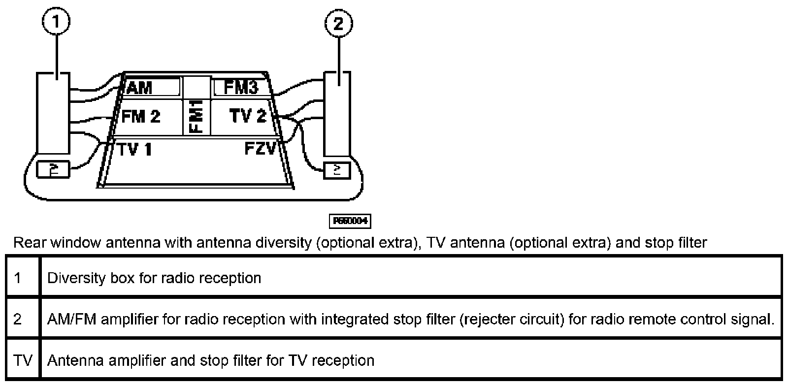

Radio Remote Control
Radio Remote Control
The radio remote control is functionally integrated in the general module of the ZKE. The antenna integrated in the rear window on the E46 Sedan, Sport Wagon, Coup� and E83 X3 is used as the antenna for this purpose. On the E46 Convertible E52 Z8 and E85 Z4, the antenna is fitted in the inside mirror.
The radio signals are isolated in an antenna stop filter. The stop filter transmits the signals from the key transmitter via a data link to the general module.
All radio telegrams are coded and feature a constantly changing code so as to prevent manipulation and thus unauthorized opening of the vehicle.
Country-specific versions
General
Due to the different approval regulations for radio equipment in various countries, two different versions of the transmitter and stop filter are used.
433.92 MHz version
For all European countries (EUR version)
315 MHz version
Mainly intended for USA, Canada and Australia.
Key transmitter
A distinction must be made between two basic versions of radio-control keys:
- Up to 9/99, radio-control key with replaceable battery (commercially available lithium battery)
- From 9/99, radio-control key with permanently integrated, rechargeable battery. The rechargeable battery is charged in the vehicle via the EWS loop antenna when inserted in the ignition lock and terminal R is switched on (ignition lock in position 1 or 2).
The various radio-control keys and their different versions are illustrated in the following.
Radio-control key with replaceable battery, 433 MHz version
Radio-control key with replaceable battery, 315 MHz version
Radio-control key with rechargeable battery. In appearance, same version for 433 MHz and 315 MHz. The applicable frequency is printed on the back.
Button assignments
The three buttons on the key transmitter trigger, depending on how long they are pressed, various actions in the vehicle.
- Button 1 "Lock"
Pressed briefly: Lock and arrest central locking and activate DWA.
Button pressed and held: Window and sunroof convenient closing function (codable!)
Pressed briefly with vehicle locked: Switch on interior lights (codable)
Press briefly twice within 10 seconds with vehicle unlocked: Lock and arrest vehicle, activate DWA and switch off tilt alarm sensor and radio remote interior protection function (function for tilt-ramp garages and vehicle transport).
- Button 2 "Unlock"
Pressed briefly: Release central locking and deactivate DWA
Button pressed and held: Window and sunroof convenient opening function (codable!)
- Button 3 "Tailgate"
Pressed briefly: Open trunk lid
Button pressed and held: Trigger DWA alarm (panic mode) (function codable).
All radio remote instructions are encoded by means of a constantly changing code in order to prevent tampering in the system.
If transmission of radio remote instructions is disturbed during convenient opening/closing of the power windows, for safety reasons, the function is terminated immediately in the vehicle. The corresponding button on the key transmitter must be released and then pressed again in order to resume convenient mode functions.
The remote control function is deactivated in the general module when the vehicle key is inserted in the ignition lock in order to avoid remote control command functions being activated after unintentionally pressing the remote buttons. The general module receives the "key inserted" message from the EWS control module.
Voltage monitoring
The charge status of the battery or rechargeable battery in the key transmitter is monitored every time a button is pressed.
The key transmitter signals the battery status to the general module if the voltage reaches a lower limit value. The general module processes this message as follows:
- The instruction "lock vehicle" is not carried out. All other functions are OK.
- Undervoltage is stored in the general module
The message is evaluated in the diagnosis program for radio remote control. It is deleted automatically when the voltage value in the key transmitter is found to be OK. again 5x in succession.
If undervoltage occurs:
- The battery in radio-control keys with a replaceable battery must be renewed
- The rechargeable battery in radio-control keys with a rechargeable battery must be charged via the ignition lock for at least 30 minutes
A voltage-independent memory in the radio-control key ensures that the initialization data is not deleted even when the battery/rechargeable battery is discharged.
NOTE: In the case of radio-control keys with rechargeable battery as from 9/99, it should be noted that self-discharge, normal for rechargeable batteries, takes place while not in use. The rechargeable battery discharges after approx. 1 year. A fully discharged rechargeable battery must be recharged for approx. 30 hours until it has regained its full capacity.
Function indicator (radio-control keys with battery only)
A red LED indicates the function and battery status in the radio transmitter is integrated in the housing of radio-control keys to 9/99.
- A brief flash each time the button is pressed indicates that the voltage is OK and a radio telegram has been transmitted.
- Flashing when pressing and holding a button indicates that radio telegrams for convenient window opening/closing are sent.
- No lighting despite a button being pressed indicates that the battery in the transmitter is discharged.
- Flashing during initialization indicates that the transmitter is sending out its initialization data.
Transmitter self-test (radio-control key with LED only)
The self-test is used to check whether the transmitter electronic control is operating correctly.
The self-test is started by pressing and holding "tailgate" button and "lock" button simultaneously.
If the transmitter is functioning correctly, the red LED will light for 1 second.
Receiver
Reception of radio signals on the E46 Sedan, Sport Wagon and Coup�
The data sent by the key transmitter are received by the receiver module via a radio-TV antenna. An antenna stop filter (rejecter circuit) isolates these radio waves from other received radio waves and transmits them via a line to the general module.

The radio signals are checked and evaluated in the general module. Valid instructions are carried out (e.g. release central locking system and deactivate DWA).
Reception of radio signal on the E46 Convertible, E52 Z8 and E85 Z4
The receiver is accommodated together with the antenna in the interior rear-view mirror. The receiver transfers received radio signals via the FZV line to the central body electronics control module where they are evaluated.
Range
The minimum range for instructions to the central locking system is 10 m.
The range is limited to a radium of approx. 5 m for the convenient opening and closing of the power windows and sunroof. The range is reduced for safety reasons.
During initialization, the range is reduced to such an extent that this function must be carried out in the vehicle with the key transmitter pointing in the direction of the antenna.
Initialization
Function
The initialization procedure allocates the key transmitter to the general module. During initialization, a code is generated in the key transmitter and then transferred to the general module. The code is stored in the key transmitter and in the general module. The general module recognizes the keys belonging to the system on the basis of this code. Only commands from these keys are then carried out.
A maximum of 4 keys can be initialized for each vehicle. The codes of all other keys are deleted when a key is reinitialized. This means that all the keys of a system must be initialized simultaneously.
Initialization procedure
Carry out key transmitter initialization in the vehicle interior.
- Unlock vehicle via central locking and close driver's and passenger's doors.
- Briefly switch on terminal R in vehicle (maximum 5 seconds) and switch off again. => The system is now ready to be initialized.
- Press and hold "unlock" button on the key transmitter.
- Point key transmitter in direction of antenna and, with the "unlock" button pressed, press "lock" button three times within 10 seconds. => A new code is generated in the key.
- Release both buttons. => The general module signals that initialization of the key transmitter was successful by locking and unlocking the central locking system.
Repeat the procedure as of Point 3 (= press and hold "unlock" button on key transmitter) to initialize the other keys. Terminal R must not be varied during this procedure.
The initialization procedure is terminated if terminal R is switched on.
NOTE: A voltage-independent memory in the radio-control key ensures that the initialization data is not deleted even when the battery or rechargeable battery is discharged.